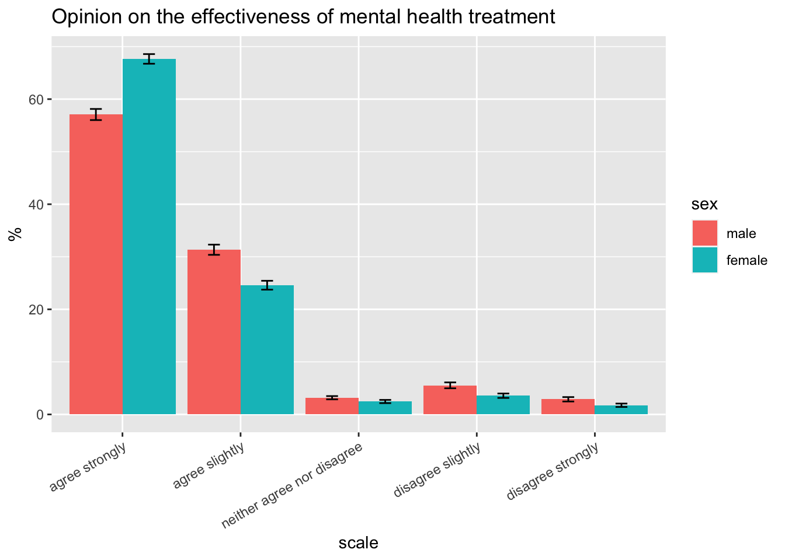

So far, we found out from our analysis of the 2021 BRFSS data set that women are more likely to report past depression and >15 days mental health not good than men, controlling for demographic and physical health. However, the reason behind this discrepancy remains unclear. Do men indeed have better mental health than women, or are things more complicated behind the scenes? For example, it is possible that men express their emotions less frequently than women or have more stigma against mental health issues, which prevent them from self-reporting bad mental health or seeking help from mental health professionals.
Therefore, it’d be interesting to explore how women and men differ in mental health care utilization, their own opinions on mental health disorders, and their perceived public opinions on mental health issues. Unfortunately, there is no relevant variables in the 2021 BRFSS data set to answer these questions, and public opinion data on mental health is hard to find. However, after some search, we found that the 2012 BRFSS data contains some variables that might help answer our questions.
The 2012 BRFSS data set has three questions on mental health:
Unfortunately, the CDC did not specify in their codebook what was meant exactly by mental illness. Here, we are assuming that it is a general term that spans many mental health disorders/issues, such as depression, anxiety, PTSD, bipolar disorder, autism, and so on.
The first question measures mental health service utilization. We hypothesize that men have lower mental health service utilization than women. The second question measures people’s perceived public stigma against mental illnesses. We hypothesize that people who think the public have more stigma are more likely to be men and are less likely to seek mental health help. The third question asks for people’s opinion on the effectiveness of mental health treatment. Although this is an interesting question, we think it is unclear what this items measures - the level of trust in mental health care providers, or the level of stigma agaisnt people who have mental health disorders?
First, we check whether women also self-reported worse mental health outcomes than men in the 2012 BRFSS data set.
# depression
depr_by_gender2012 = brfss_design2012 %>%
filter(!is.na(depression)) %>%
group_by(sex, depression) %>%
summarize(percent_past_depression = 100*survey_mean(na.rm = T, vartype = c("ci"))) %>%
filter(depression == "yes") %>%
select(-depression)
knitr::kable(depr_by_gender2012,
col.names = c("gender",
"% past depression",
"lower 95% CI",
"upper 95% CI"))| gender | % past depression | lower 95% CI | upper 95% CI |
|---|---|---|---|
| male | 12.84309 | 12.54715 | 13.13902 |
| female | 20.83530 | 20.52275 | 21.14786 |
Based on the 95% CI, we can see that in 2012, women still had significantly higher prevalence of self-reported past depression than men.
The mean number of days reported by women and men in 2012 were calculated as follows:
days_badmh_by_gender2012 = brfss_design2012 %>%
filter(!is.na(days_badmh)) %>%
group_by(sex) %>%
summarize(mean_days_badmh = survey_mean(days_badmh, na.rm = T, vartype = c("ci")))
knitr::kable(days_badmh_by_gender2012,
col.names = c("gender",
"average days mental health not good in the past 30 days",
"lower 95% CI",
"upper 95% CI"))| gender | average days mental health not good in the past 30 days | lower 95% CI | upper 95% CI |
|---|---|---|---|
| male | 4.393127 | 4.277335 | 4.508920 |
| female | 5.653006 | 5.547855 | 5.758156 |
It is not surprising that women reported higher numbers of days mental health not good in the past 30 days than men in 2012 as well.
We first look at how mental health service utilization differs among men and women are at risk of mental health issues (here, we meant those who reported past depression or reported >15 days mental health not good in the past 30 days) in the 2012 BRFSS data set.
mh_treatment_by_gender = brfss_design2012 %>%
filter(days_badmh > 15 | depression == "yes") %>%
filter(!is.na(mistmnt)) %>% # filter out those who weren't asked about mental health service utilization
group_by(sex, mh_treatment) %>%
summarize(percent_using_treatment = 100*survey_mean(na.rm = T, vartype = c("ci")))
knitr::kable(mh_treatment_by_gender,
col.names = c("gender",
"whether currently using mental health service",
"% currently using mental health service",
"lower limit of 95% CI",
"upper limit of 95% CI"))| gender | whether currently using mental health service | % currently using mental health service | lower limit of 95% CI | upper limit of 95% CI |
|---|---|---|---|---|
| male | no | 59.72710 | 57.15578 | 62.29843 |
| male | yes | 40.27290 | 37.70157 | 42.84422 |
| female | no | 52.42837 | 50.61441 | 54.24234 |
| female | yes | 47.57163 | 45.75766 | 49.38559 |
The table above shows that among those who are under risk of mental health issues, women are more likely to be currently using mental health services than men.
Next, we look at the distribution of responses by gender to the second question. This time, we included all women and men, regardless of their self-reported mental health status.
mh_pub_stig = brfss_design2012 %>%
filter(!is.na(misphlpf)) %>% # filter out those who weren't asked about this
group_by(sex, mh_pub_perc_opinion) %>%
summarize(percent_category = 100*survey_mean(na.rm = T, vartype = c("ci")))
mh_pub_stig %>%
ggplot(aes(x = mh_pub_perc_opinion, y = percent_category, fill = sex)) +
geom_bar(position="dodge", stat="identity") +
geom_errorbar(aes(ymin=percent_category_low, ymax=percent_category_upp),
width=.2, position=position_dodge(.9)) +
theme(axis.text.x = element_text(angle = 30, hjust = 1)) +
labs(title = "Perception of public stigma against mental health disorder",
x = "scale",
y = "%")Interestingly, more % of men think that people are generally caring and sympathetic to people with mental illness. That is, men actually have more optimistic perception of the public views on people with mental health issues than women.
What about the people who are under risk of mental health issues, i.e., those who reported past depression or >15 days mental health not good in the past 30 days? Do men in this subgroup also have more optimistic perception of the public stigma?
brfss_design2012 %>%
filter(!is.na(misphlpf)) %>% # filter out those who weren't asked about this
filter(depression == "yes" | days_badmh > 15) %>%
group_by(sex, mh_pub_perc_opinion) %>%
summarize(percent_category = 100*survey_mean(na.rm = T, vartype = c("ci"))) %>%
ggplot(aes(x = mh_pub_perc_opinion, y = percent_category, fill = sex)) +
geom_bar(position="dodge", stat="identity") +
geom_errorbar(aes(ymin=percent_category_low, ymax=percent_category_upp),
width=.2, position=position_dodge(.9)) +
theme(axis.text.x = element_text(angle = 30, hjust = 1)) +
labs(title = "Perception on public stigma against mental health disorders \n among people who reported past depression or \n >15 days mental health not good in the past 30 days",
x = "scale",
y = "%")We can see that, among people who are at risk of mental health issues (those who reported past depression or >15 days mental health not good in the past 30 days), men are still estimated to report more optimistic perception of public stigma against mental health illness, although the gender difference in perception is smaller in this subgroup. This observation is interesting because we speculated the opposite! Then does it mean that the fear of public stigmatization probably should not be the reason why men who are at risk of mental health issues are less likely to seek mental health services than women, as we saw from the previous section? This is an interesting question to delve in deeper.
Do men think mental health treatment is less effective compared to women? Again, we look at everyone who was asked about their opinion of the effectiveness of mental health treatment and the subgroup of those who are under risk of mental health issues separately.
mh_eff = brfss_design2012 %>%
filter(!is.na(mistrhlp)) %>% # filter out those who weren't asked about this
group_by(sex, mh_help_opinion) %>%
summarize(percent_category = 100*survey_mean(na.rm = T, vartype = c("ci")))
mh_eff %>%
ggplot(aes(x = mh_help_opinion, y = percent_category, fill = sex)) +
geom_bar(position="dodge", stat="identity") +
geom_errorbar(aes(ymin=percent_category_low, ymax=percent_category_upp),
width=.2, position=position_dodge(.9)) +
theme(axis.text.x = element_text(angle = 30, hjust = 1)) +
labs(title = "Opinion on the effectiveness of mental health treatment",
x = "scale",
y = "%")
We can see that both men and women have high agreement of the statement that mental health treatment can help people lead normal life, while agreement among women is stronger, as indicted by more percentages of women answering “agree strongly”. We look at the subgroup that consists of people who are at risks of mental healh issues:
brfss_design2012 %>%
filter(!is.na(mistrhlp)) %>% # filter out those who weren't asked about this
filter(depression == "yes" | days_badmh > 15) %>%
group_by(sex, mh_help_opinion) %>%
summarize(percent_category = 100*survey_mean(na.rm = T, vartype = c("ci"))) %>%
ggplot(aes(x = mh_help_opinion, y = percent_category, fill = sex)) +
geom_bar(position="dodge", stat="identity") +
geom_errorbar(aes(ymin=percent_category_low, ymax=percent_category_upp),
width=.2, position=position_dodge(.9)) +
theme(axis.text.x = element_text(angle = 30, hjust = 1)) +
labs(title = "Opinion on the effectiveness of mental health treatment \n among people who reported past depression or \n >15 days mental health not good in the past 30 days",
x = "scale",
y = "%")We can see that regardless whether under risk of mental health issues, the same pattern holds - Both women and men show high agreement of the effectiveness of mental health treatment with women having stronger agreement.
In summary, we found the follows:
One main takeway from these findings is that fear of public stigma might not one of the reasons why men have lower mental health service utlization than women, at least not a major one. More importantly, these findings raise new questions. For example,
These questions are out of scope for our project, but they are interesting potential next steps to take.